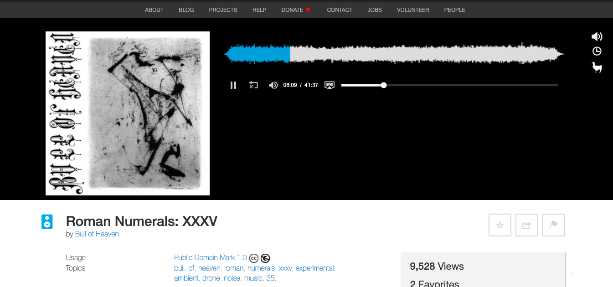

Assignment 1
Find a website show the process of signing up, posting content and social interaction all using HTML and CSS. In this example, I will be using archive.org.
This is the home page of the website. On the top right corner is where you can sign up to become a member.
When you click to sign up, you will be redirected to the sign up page. After filling out the necessary information, you can click on sign up.
After signing up, it will send you an email verification to the email you used to sign up.
After your account has been verified, you can click on your profile link to view the drop down menu of the various option available. In this case, I choose upload to upload a profile picture.
After choosing a picture, i clicked on submit to verify that photo

Next, I will be uploading some content from my computer to post unto my profile. Click on the upload button to search for content.
Fill in the necessary information that pertains to the content you are uploading. When completed, click on the "upload and create your item" button
The content you've uploaded will then appear after you submit. In my example, i used a video of an event i attended.
For this demostration, I'm returning to the home page of the site and i will navigate ways to interact with other users and their content. For this example, i will be clicking on the navigation tab "audio".
After clicking on audio, a drop down menu appears with other tabs directing you to different options in audio. For this example, I will be viewing "Music, Arts and Culture".
Below you'll see various different users and their content which pertains to audio. I've choosen the user "Bull of Heaven".
In this user's page, you can see several different pieces of audio that i can choose from. In this example, I will be viewing their "Roman Numerals XXXV" content.
When clicking onto the album, it redirects me to the page that houses the audio clip.

As I scroll down on the page, i can send a review to the users page of this particular content.
When clicking onto the review button, it redirects me to another page that allows me to fill out a review. After leaving a review, i can now submit the review by pressing "submit".
Once it has been submitted, it will send me to another page that will verify that my review has been submitted to that user!